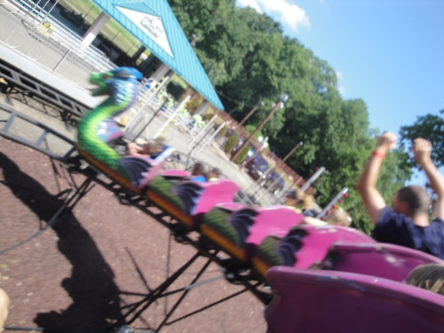

| |
Dragon Review

Now this ride is currently located at Clementon. However, when I rode it, it was at Bowcraft Playland. A park I was solely at for credit whoring. Now Crossbow may be the official major coaster of the dinky little park, don't forget that they also have a kiddy coaster. A real, actual kiddy coaster. So yeah. We still got that, since we're most likely total whores here. So take your seats, cause here we go. We start out with a tire driven lift hill, and then just drop down into a mini little helix. You then rise up just to go down into yet another helix. Man, what is it with this park and helixes? Both of their coasters are essentially nothing but helixes. Huh, strange. So yeah, we exit out of the helix and...that's it. Time to just go around another lap on this...interesting ride. Ok, who am I kidding? It's just a boring kiddy coaster, and now that we got the credit, we have to take many laps anyway, just to entertain the other kids since they want a ride that doesn't last only 20 seconds. The downsides of credit whoring. But hey, you got your credit, and that's what's important. Whores, you can still ride this at Clementon Park.
2/10
Location: Clementon Park
Dragon opened at Bowcraft Playland in 1998
Dragon moved to Clementon Park in 2019
Built by: Wisdom Rides
Last Ridden: July 27, 2011
I have ridden this exact same ride at the following parks.
Palace Playland
Dragon Photos

Home
|